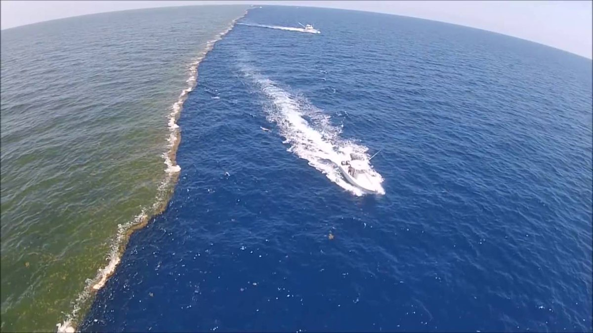

Atlantic pasific oceans
- The Atlantic Ocean is the second-largest ocean and plays a crucial role in global weather and climate.
- The Pacific Ocean is the world's largest and deepest oceanic division, covering more than 30% of the Earth's surface.
- The Atlantic is known for the Bermuda Triangle, a region noted for unexplained disappearances of ships and aircraft.
- The Pacific is home to the Ring of Fire, an area with high volcanic activity and frequent earthquakes.
- Both oceans are rich in biodiversity, supporting a wide range of marine life and ecosystems.
